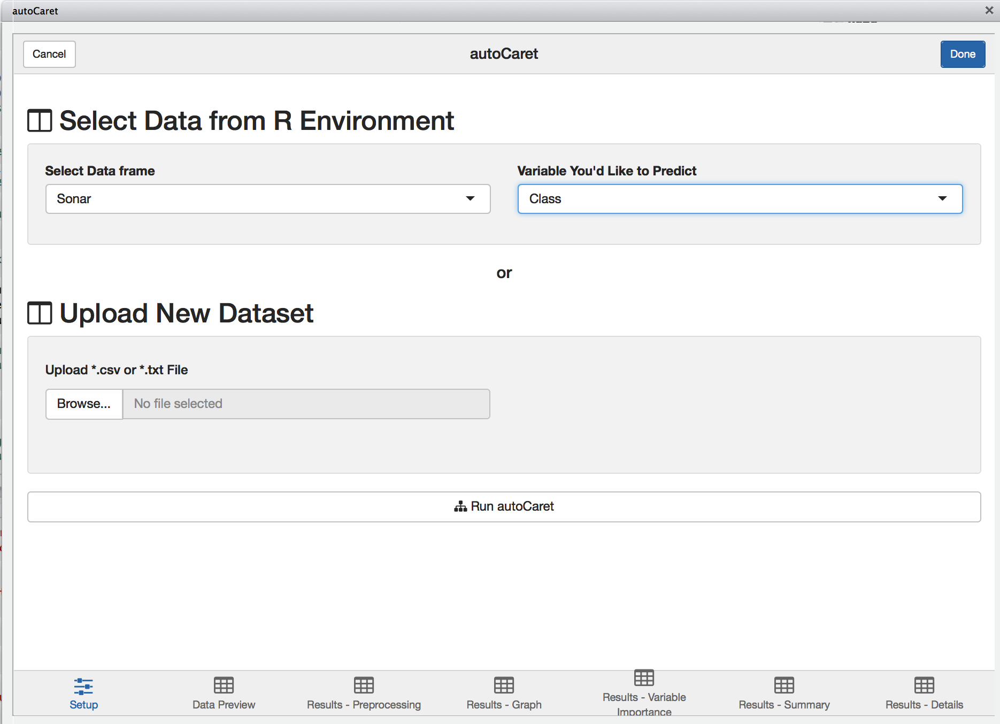
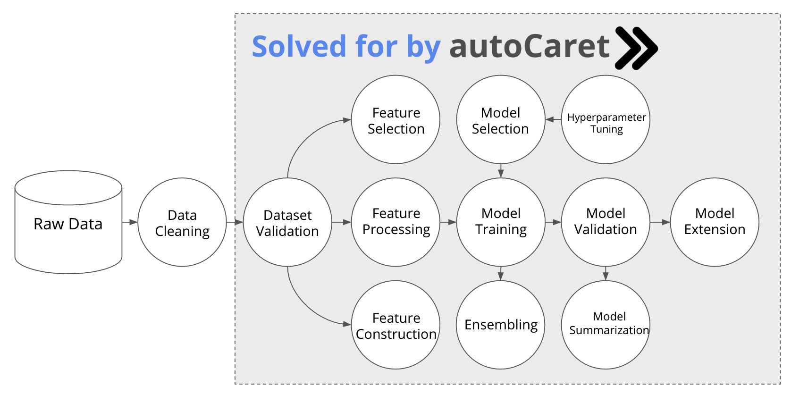

autoCaret is an R package for helping business analysts and other enthusiats understand how to begin building predictive models in R.
It leverages and wraps underlying features and functionality provided by both the caret, (short for Classification And REgression Training) and caretEnsemble R packages in an effort to provide a simple programmatic interface for analysts who would like to begin working on binary classification problems .
Also included in the package is also an intuitive graphical interface (in the form of an RStudio Add-In) that allows for an easy introduction into the package’s main functionality - producing an ensemble model via autocaret::automodel() - in order to help speed the learning and development process.
We fundamentally believe that the best ideas and concepts in machine learning are simple but that current literature and accessibility to “getting started” with machine learning sometimes puts walls up against these ideas.
We think:
Machine learning is a field that is only growing in it’s pervasiveness. We think that additional tools need to be built to get analysts, who might not have much experience using R or other programming languages engaged and excited about using machine learning.
Why is this so important?
While R tools like caret have brought us a long way in the effort to standardize many of the commonly repeated parts of the process required for building predictive models, there is no reason we can’t further package this process.
Python tools like TpoT have attempted to do this using genetic programming. Additionally there are a number of proprietary tools built by companies like BigMl
The autoCaret package intends to take an analagous but simpler approach:
summary() and predict